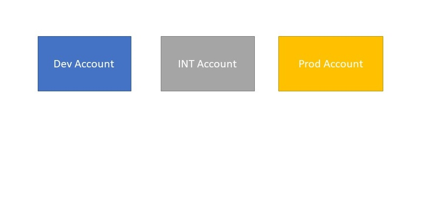
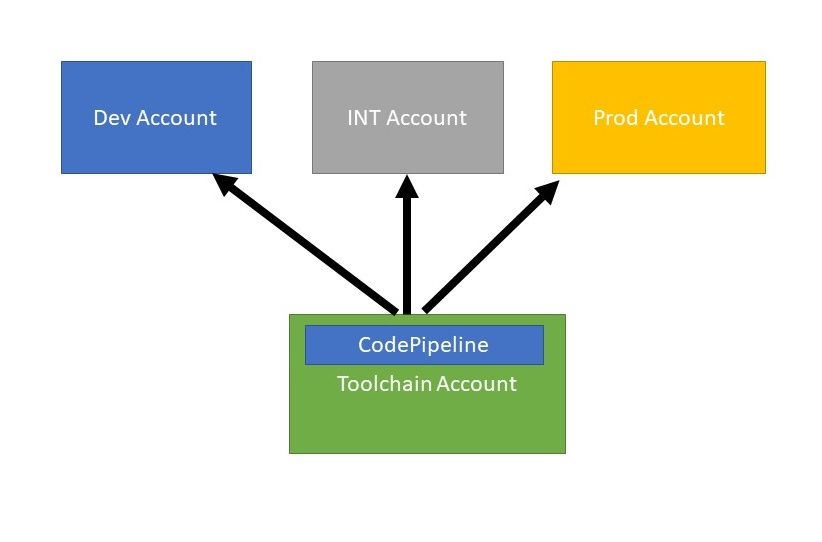
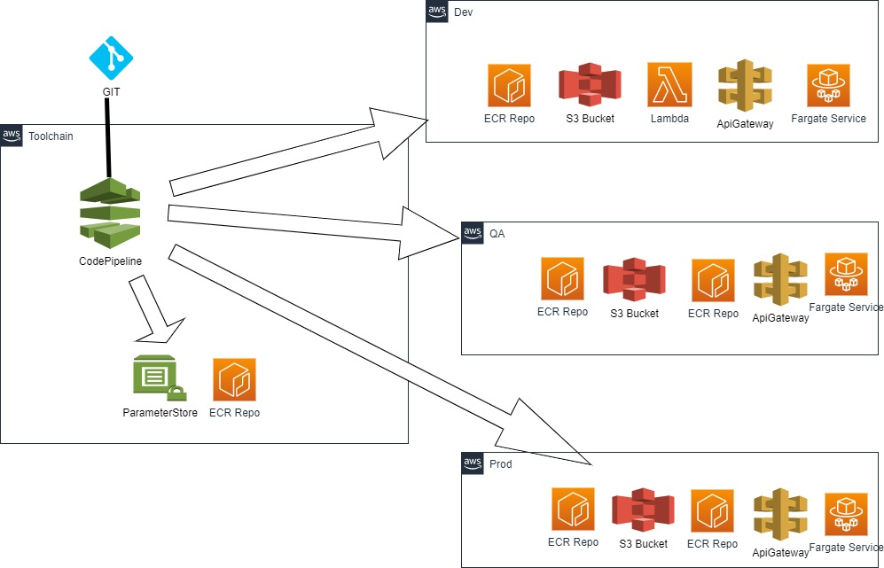
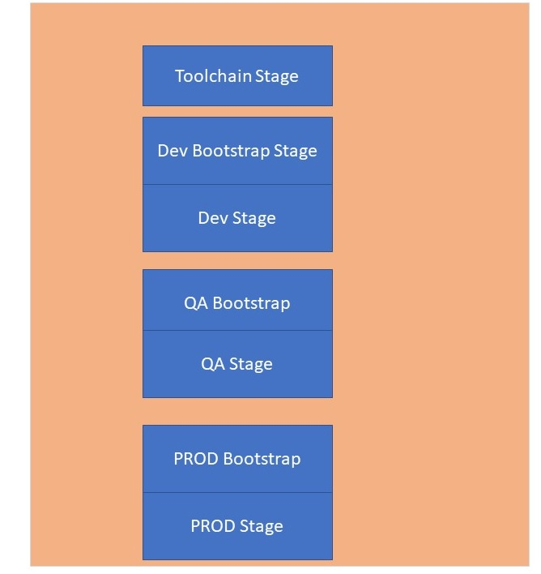
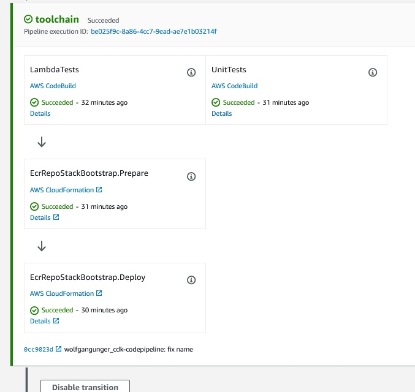
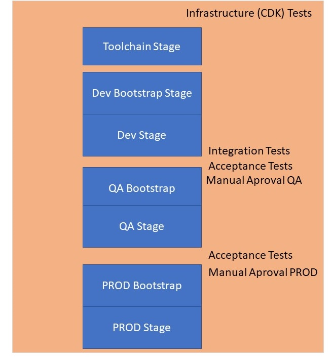

SCC
Brasil
os cloud gurus
Software Cloud Consulting
Your software development, cloud, consulting & shoring company
CodePipeline with CDK Python and generic Superclass
By Wolfgang Unger
This tutorial will cover various topics about AWS Code Pipelines for deploying AWS Resources and
Stacks to your accounts
First, how should in general the account structure and setup look like to deploy with AWS
codepipeline?
Next, how should the CodePipeline be implemented in CDK (Python). See my example on github :
Git
Wolfgang
Unger CDK Pipeline
I will also cover here how to use object orientated features in your CDK Python Project to
re-use Code and
avoid Copy & Paste Anti-Pattern. Therefor we use a Generla/Abstract Pipeline Superclass which
can be
sub-classed in
other projects and Actions can be overwritten or excluded.
The resources we are going the deploy are simple, but it shows the process in general.
We have a ECR Repo, S3 Bucket, Batch, Job Definitions and a Lambda. Of course you will have
to
adapt these resources in the AppDeploy and Toolchain Deploy Stages for your needs.
We will have infrastrucure tests in our project to test the CDK Stacks and Constructs.
We will have tests for the lambda code.
There are Integration Tests ( only implemented very simple) and Acceptance Tests in the
Pipeline
( dummy code)
Please take also a look in the AWS Documentation on CDK Pipeline, this contains a lot of useful
informations :
AWS Documentation on CDK Pipelines
First lets cover a overview how to create a AWS CodePipeline to deploy your
AWS Resources ( as CloudFormation Stacks generated by CDK) to your Accounts.
What kind of setup do you ( already have or ) need to deploy your AWS Resources with CDK (
and therefor with CloudFormation) to your accounts?
For sure you have a least one account. In this case this would be the PROD account and the
setup will be quite simple.
But more likely you will have at least one more account for development and testing or
also used
a DEV account and a Integration/QA account. This setup would look like this:

In these 3 accounts we will deploy our AWS resources. The names of the Stages (DEV,QA,INT,PROD)
does not really matter. The 3 stages should be identical
concerning the resourses
But beneath the resources we want to deploy to run our services on these accounts ( for example
a Fargate Cluster with microservices)
we need also a CodePipeline to deploy these.
Where should we deploy the CodePipeline ( and other CIDC related resources like CodeBuild
Projects)? For sure not in one ( or all) of our stage accounts.
Therefor we need a dedicated account for the CI/CD resources, let's call it Toolchain
Account.
Our AWS Account strucutre will then be like this:

Now we can setup our CDK Project for our CodePipeline.
First lets illustrate in a simplified AWS diagram, what we want to set up:

The diagram shows the pipeline inside the Toolchain Account.
The source can be Github, Github Enterprise, CodeCommit, this does not really matter.
Note:
I am using a CodeStar Connection to my Github and this CodeStar Connection is referenced in
the
pipeline,
not the Github directly.
You have to create this CodeStar Connection manually in the AWS Console UI before the first
deployment of the Pipeline.
There are 3 more accounts DEV, QA & PROD. Into these 3 account we will deploy a ECR-Repo, a S3
Bucket, a Lambda Function,
an API- Gateway and an Fargate Service with our Pipeline.
Furthermore the pipeline will also deploy 2 resources inside the Toolchain Account, a
ParameterStore and one more ECR-Repo.
This is basically the setup of the sample Project.
Lets go
You find the source to this example in my github account :
Git Wolfgang
Unger CDK Pipeline
The structure of the project is the following:
README
cdk.json
requirements.txt
app.py ( the main python file for the cdk commands, creates the Pipeline Stack)
generic/infrastructure ( generic cdk classes and constructs to reuse in other projects)
generic/infrastructure/tests ( cdk tests for this folder)
infrastructure ( project specific cdk classes and constructs)
infrastructure/tests ( cdk tests for this folder)
tests/acceptance
tests/integration
First we have to define our requirements.txt
I am using CDK2 in my example.
For CDK2 the requirements.txt will look like this:
aws-cdk-lib==2.21.1
constructs>=10.0.0
....
Next we have to define all account informations in our cdk.json.
So we define our account structure and informations in the config inside the cdk.json.
The cdk.json will be like this (simplified):
{
"app": "python3 app.py",
"context": {
"@aws-cdk/aws-apigateway:usagePlanKeyOrderInsensitiveId": true,
"@aws-cdk/core:stackRelativeExports": true,
"@aws-cdk/aws-rds:lowercaseDbIdentifier": true,
"@aws-cdk/aws-lambda:recognizeVersionProps": true,
"@aws-cdk/aws-cloudfront:defaultSecurityPolicyTLSv1.2_2021": true,
"@aws-cdk-containers/ecs-service-extensions:enableDefaultLogDriver": true,
"@aws-cdk/aws-ec2:uniqueImdsv2TemplateName": true,
"@aws-cdk/core:checkSecretUsage": true,
"@aws-cdk/aws-iam:minimizePolicies": true,
"@aws-cdk/core:target-partitions": [
"aws",
"aws-cn"
],
"config" : {
"accounts" :{
"tooling": {
"account":"123456789012",
"region":"eu-west-1"
},
"dev": {
"account":"123456789012",
"region":"eu-west-1",
....more params
},
"qa": {
"account":"123456789012",
"region":"eu-west-1",
....
},
"prod": {
"account":"123456789012",
"region":"eu-west-1",
....
}
},
"development_branch": "development",
"production_branch": "main",
"repo" : "cdk-pipeline",
...
}
}
}
Also we need to bootstrap the CDK before the first CDK deploy
First you need to call this commando for the Toolchain Account ( with Toolchain Credentials)
cdk bootstrap --cloudformation-execution-policies arn:aws:iam::aws:policy/AdministratorAccess
aws://12345678912/us-east-1
Then for each Stage Account
(with stage credentials, first account is toolchain , second stage account)
cdk bootstrap --cloudformation-execution-policies arn:aws:iam::aws:policy/AdministratorAccess
--trust 12345678912 aws://12345678915/eu-west-1
The pipeline will be created in the Toolchain Account. The pipeline is self-mutating, so once
created in
can update itself on Github Changes after a Push to the Repo.
But of course it cannot create itself for the very first time.
So you will have to create the pipeline the first time with the CLI.
cdk deploy cdk-pipeline
You will also need Roles for the Pipeline. The Pipeline needs rights on the Toolchain Account to
create Resources there ( itself and
CodeBuild Projects), execute CodeBuild and CodePipeline of course and also the rights to deploy
Resources in the 3 Stage Accounts.
For our Synth and Deploy Actions for the 3 Stages and also for Acceptance Tests for example on
DEV or QA we will also need these roles. We can create Policy Statements for Pipeline Actions (
CodeBuildSteps) using
these roles, but the roles itself we will create before the pipeline itself.
These roles are inside the Stack bootstrap_role_stack
I am using CDK2 in my example, if you are still in CDK1 there are some differences (For example
in CDK1 exists a cdkPipeline which no longer is available in CDK 2 . You
cannot migrate this cdk class, you will have to switch to the CodePipeline class).
The pipeline can be created like this :
pipeline = CodePipeline(
self,
id,
pipeline_name=id,
synth=synth_step,
cross_account_keys=True,
code_build_defaults=pipelines.CodeBuildOptions(
build_environment=BuildEnvironment(
build_image=aws_codebuild.LinuxBuildImage.STANDARD_5_0,
privileged=True,
)
),
)
Inside our pipeline will have to implement the structure, this means stages, actions etc.
The most important objects in our pipeline will be :
CodePipeline
Stage
CodeBuildStep
For sure we will have to deploy resources to our stages ( DEV, INT , PROD), so at least we must
have on stage ( CDK Stage class) in our pipeline . This stage will contain the CDK Stacks which
will be deployed to the stage account.
So a very simple example should only contain this one stage object inside the pipeline.
And we will execute some Actions, for example the Synth Action or execute Tests, which we will
do with CodeBuildSteps
My Github Example is a little bit more advanced to cover some typical requirements on projects
with a little more complicated infrastructures.
We have a Toolchain Deploy Stage.
This will deploy resources in the Toolchain Account, not the pipeline itself, but for example
resources
which might be needed by the other 3 accounts in common like a Parameter Store or common ECR
Repo.
Further we will separate the deployments for our Stages in 2 parts, a Bootstrap and the Main
part.
This might be neccessary if you work for example with docker images, need to create resources
like
ECR repos first, then execute some other actions ( like docker builds and push to ECR ), before
finally be
able to create the rest of resource, which might be fargate service depending on the already
deployed images in ECR:
So the structure of the Pipeline will be like this:.

The pipeline will run from top to bottom, so first create the Toolchain resources.
Then creating the DEV Bootstrap resources and afterwards the rest of the DEV resources.
Then the same for QA and finally the same for PROD.
This would already deploy all resources we want to our stages, but of course we want to add some
tests to our Pipeline.
First we should test our CDK Code before deploying anything at all.
Therefore we ran the infrastructure tests even before the Toolchain Stage.
We can also tests the lambda code here.
So our Toolchain Stage will look like this once it is deployed.

After Deploying DEV we want to run Integration and also Acceptance Tests.
After QA we execute Acceptance Tests. Maybe also in PROD.( of course you can change this order
and
strucure as you want).
Finally we also add Manual Approval Steps before the next Stages.
So our Pipeline will look like this.

We could also do one thing different here:
Separate the Prod Stage into a different pipeline.
Maybe we want to give less users permission to execute the prod pipeline.
Or we have a different branch for DEV/QA and PROD
In this case we could create 2 Pipelines, one for DEV & QA and one for PROD.
Now we have the design of our Pipeline, let's start to code it.
We could do it one way to keep it simple.
Inside the PipelineStack we add anything we need after the Constructor in sequential order in a
bunch of lines.
This is actually what many Stack classes look like and it works fine.
But there is one disadvantage.
Since we wrote a real cool pipeline, we want to re-use it for further project, don't we?
If you have just one big block of code you will not be able to changes a small part without
copying and adapting the whole pipeline.
We will use a different approach:
The CDK Code is in Python ( or Java etc) so let's make use of object orientated features !
Let write a generic Pipeline class we can reuse and for any usage in a project we will subclass
this pipeline and adapt
only the parts we need to adapt.
Therefor we will structure the code of our PipelineStack better and exclude code in methods.
This allows us to overwride these methods in a subclass.
We will try move any code which might be changed by a future project in a method. So for example
the
commands for the Integration Tests might be different in my next project. So I only want to
changes this command,
but not the whole pipeline.
Also I might not need Acceptance Tests or Integration Tests for another project, so I want to
get rid of these easily.
So we will add Steps/Actions this way in our generic Pipeline
GenericPipelineStack:
infrastrucure_tests = self.get_infrastrucure_tests(
git_input
)
if infrastrucure_tests != None:
stage.add_post(infrastrucure_tests)
The method for the infrastrucure-test looks like this and it also separates the command into a
dedicated method
GenericPipelineStack:
def get_infrastrucure_tests(self, git_input):
dev_infrastrucure_tests = pipelines.CodeBuildStep(
"InfrastructureTests",
input=git_input,
build_environment=aws_codebuild.BuildEnvironment(
build_image=aws_codebuild.LinuxBuildImage.AMAZON_LINUX_2_3,
privileged=True,
),
commands=self.get_infrastructure_tests_commands(),
)
return dev_infrastrucure_tests
def get_infrastructure_tests_commands(
self
) -> list:
commands = [
"pip install -r requirements.txt",
"pip install -r requirements_dev.txt",
"pytest --cov=infrastructure --cov-branch --cov-report term-missing -vvvv
-s
infrastructure/tests",
]
return commands
This will allow us to use our pipeline in a more generic way and we can re-use it much more
simple in other projects.
We will subclass our Generic Pipeline Stack with a Project Pipeline Stack
class ProjectPipelineStack(GenericPipelineStack):
If we are able use the GenericPipelineStack as it is, perfect we hast have to implement the def
__init__ method and call the super construcur, thats it, our
ProjectPipelineStack will have about 10 lines of code.
But what if we want to call different tests or tests in another folder and we must to change to
command for the infrastructure tests?
If we would have only one big block of code inside the GenericPipelineStack, this would not be
possible.
But now, we can just overwrite the method #get_infrastructure_tests_commands
ProjectPipelineStack:
def get_infrastructure_tests_commands(
self
) -> list:
commands = [
"pip install -r requirements.txt",
"pip install -r requirements_dev.txt",
"pytest --cov=infrastructure --cov-branch --cov-report term-missing -vvvv
-s
myfolder/tests",
]
return commands
Maybe you have not yet infrastructure tests ( or integration/acceptance tests) and want to
remove this step/actions from the pipeline?
Well just do the following overwrite in your Subclass.
ProjectPipelineStack:
def get_infrastrucure_tests(self, git_input):
return None
In our GeneralPipelineStack we have this implementation, do you remember?
if infrastrucure_tests != None:
stage.add_post(infrastrucure_tests)
Since we are returning now None, no Tests will be added to our Pipeline, no step is added.
This way you can easily re-use and adapt the GenericPipelineStack.
If you need to change a CodeBuildStep or Command just overwrite the method in your SubClass
of
the Pipeline.
You can apply this also to your CDK classes.You can create generic Stacks or Constructs and
reuse them in your project,
so you don't have to write them from scratch again in your new project.
You can see the ECRConstruct class in this folder as example.
Inside the project I have a folder
generic/infrastructure
in which the generic infrastructure/cdk classes are located.
the project specific classes are inside the folder
infrastructure
Tests
The example project shows also the following concepts :Infrastructure (cdk ) tests.
pytest -vvvv -s generic/infrastructure/tests
these tests are executed first, before deploying the Stacks
Note:
CDK Tests are easy to write if you have a Stack . See the examples on how to test Stacks.
For example you can create the Stack and check one or more of the resources are really included.
If you have only a Construct, then they cannot be tested the same way.
Therefore I have an example with a wrapper class, basically a Stack which creates the construct.
This way, you can now create this wrapper Stack, which will create the construct.
Lambda tests
Here we have 2 kind of examples:
-Simple tests which tests just python methods
-Lambda mock tests which mock and test lambda code that uses for example boto3 and aws resources
the lambda tests are also executed before deploying the stacks.
There is a simple example for Integration tests
these tests are validating the deployed resources on the stage account.
therefor the CodeBuildStep for these commands needs to assume a role to access the stage account.
you can see the code for this inside the integration tests CodeBuildStep of course the integration tests must run after the deployment of the stacks
pytest -vvvv -s tests/integration/
Acceptance tests.
tests/acceptance/tests.sh
These are only implemented as dummy tests in this project. feel free to implement these
Setup Summary:
-Create CodeStar Connection in DeveloperTools ( if not using Github directly in Source)
-Adapt Project for your environment ( account numbers, connection Url in cdk.json)
-Create your own Stacks and adapt the Stages ( AppDeploy, BootstrapDeploy)
-Deploy Roles to Dev, QA & Prod
-Bootstrap the Pipeline Project
-Your Code must be pushed to the Git Repo of Pipeline before deploying the pipeline
-Deploy the Pipeline the very first time manually with CLI : cdk deploy
-By now changes in you repo will trigger the pipeline, including self-mutate of the pipeline
References
Autor

Wolfgang Unger
AWS Architect & Developer
6 x AWS Certified
1 x Azure Certified
A Cloud Guru Instructor
Certified Oracle JEE Architect
Certified Scrum Master
Certified Java Programmer
Passionate surfer & guitar player